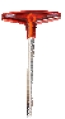
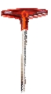
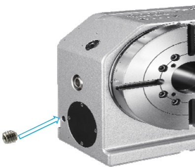

資料庫
▶ 查詢資訊結果
| 編號 | 設備種類 | 設備部件 | 維修項目 | 維修類型 |
|---|---|---|---|---|
| # | # | # | # | # |
▶ 點擊項目說明欄位即可進行編輯
點擊放大預覽Trouble Shooting
File No : TS31103
Error Code : 0000

- A. T型板手#8 T-type wrench#8
- B. 止瀉帶Thread Seal Tape
- Parts (零件)：
- 1. 注油塞蓋 Plug
Trouble Shooting
File No : TS31103
Error Code : 0000
Step 1 排油 Drain the lubrication
Illustration(步驟說明)：
使用8號T型板手將排油塞頭拆除排出齒輪油
Using T-type wrench#8 to remove the set screws, then drain the lubrication.
Using T-type wrench#8 to remove the set screws, then drain the lubrication.
Remark(備註補充)：
(Tools)


Step 2 安裝排油塞頭 Install the plug

Illustration(步驟說明)：
1.將塞頭纏上止瀉帶
2.使用8號T型板手將排油塞頭鎖緊
1. Wrap the set screws with thread seal tape.
2. Lock the set screws with T-type wrench#8.
2.使用8號T型板手將排油塞頭鎖緊
1. Wrap the set screws with thread seal tape.
2. Lock the set screws with T-type wrench#8.
Remark(備註補充)：
(Tools)


Step 3 添加齒輪油 Add the lubrication
Illustration(步驟說明)：
1.使用8號T型板手將注油塞蓋拆除
2.添加齒輪油至本體內(以下參考建議油品)添加油量參
考操作手冊11.1章
3.添加完成後,使用8號T型板手將塞蓋鎖固

Remark(備註補充)：
(Tool B)
建議使用尖嘴型油壺添加齒輪油
It is better to add lubrication with needle-nose oil bottle.

It is better to add lubrication with needle-nose oil bottle.
Step 4
Illustration(步驟說明)：
Remark(備註補充)：
(Tool B)
×
 −
+
−
+
 −
+
−
+
#
步驟說明：
備註補充：